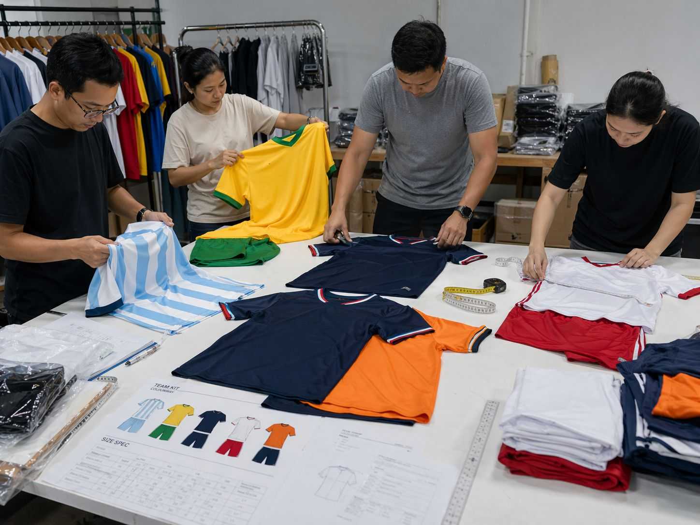
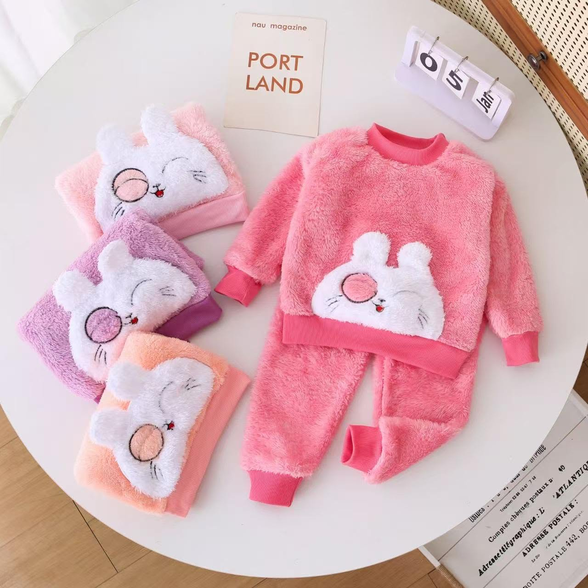
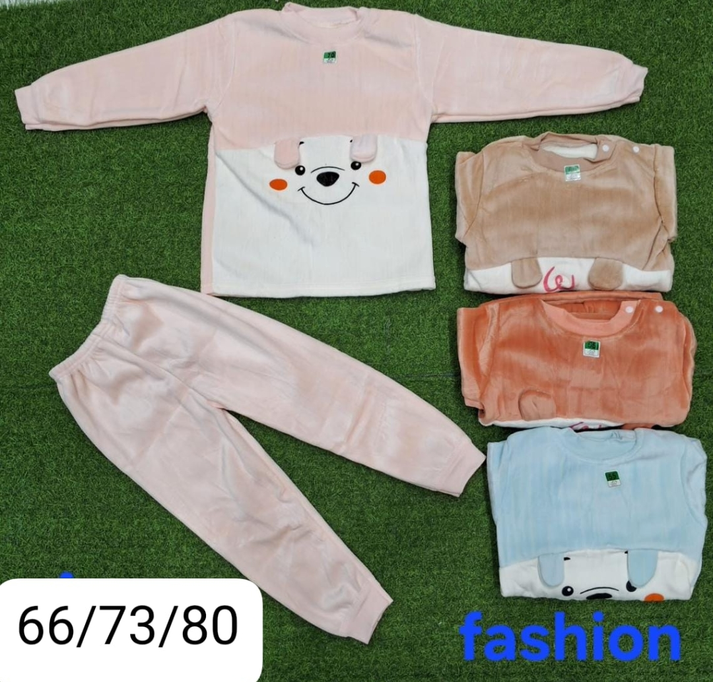
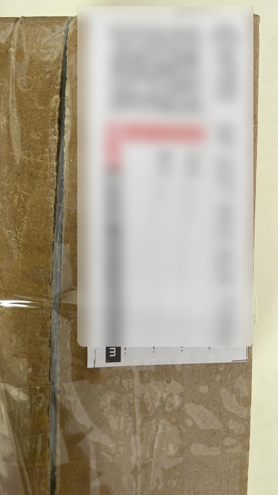

Before money is wired
Supplier discovery, factory filtering, communication review, and early warnings when the order does not match supplier reality.
Why clients hand procurement over here
That is why clients use China Partner Hub: one operating path from supplier filtering into samples, production follow-up, and shipment coordination instead of jumping between disconnected people.
The work fits apparel, workshop-made products, industrial systems, and mixed-category orders where supplier role, communication quality, and production follow-through matter as much as price.

What you are handing over
Procurement work that stays close to real factory context, category judgment, and updates that hide sensitive details.
Typical categories
Apparel, workshop sourcing, dust systems, utility equipment, samples, and shipments.
Same path after yes
If the supplier path is real, the same working logic continues into samples, production, and shipping.
Why this path is useful
Supplier discovery, factory filtering, communication review, and early warnings when the order does not match supplier reality.
Production follow-up, issue escalation, quality checkpoints, and support before goods are ready to ship when you cannot easily verify progress yourself.
The work is not limited to clothing. It covers soft goods, workshop supply, industrial systems, and shipment support.
The work avoids exaggerated claims and leans on process clarity, documented proof, and visible service structure.



Why this is easier to trust
Visible proof matters, but posting everything creates risk. Public pages show real category, workshop, sample, and shipping context while customer names, labels, codes, tracking references, and QR content stay hidden.
The same standard carries into active projects, where updates are expected to be specific, useful, and safe for client information.
Why that matters
You can see real operating evidence without handing client or supplier information away carelessly.
Working principles
A cheap quote from the wrong supplier is not a win. The job is to identify viable supplier fit before the cost of a mistake expands.
You can trust progress updates more when they stay specific, measured, and tied to what is actually happening in production.
Multi-category proof supports consumer products, workshop sourcing, industrial systems, and shipment follow-up without narrowing the business into one vertical.
Names, labels, and tracking details are hidden in public examples so client information is not exposed carelessly.
Next move
Send the product type, quantity range, timeline, or current supplier situation and get a clearer first recommendation on the right next step.